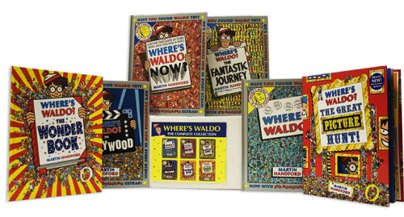
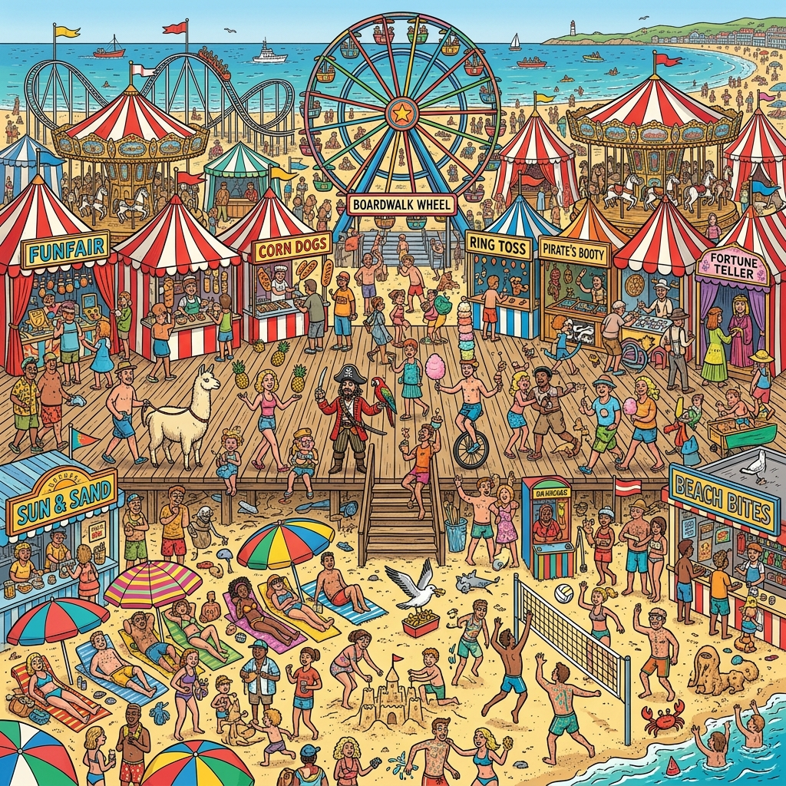

History & Publications
⚡ Quick Navigation

Where's Waldo? The Complete Collection Box Set
Follow Waldo on all of his incredible journeys! This premium box set compiles the complete classic series of search-and-find books, offering hours of interactive family fun and artistic marvels by Martin Handford.
Shop on AmazonWhere's Waldo? (originally published as Where's Wally? in the United Kingdom) is a world-famous series of children's puzzle books created by English illustrator Martin Handford in 1987. The where's waldo books are known for their intricate double-page spread illustrations depicting massive crowd scenes. Readers are challenged to find Waldo, dressed in his signature red-and-white-striped shirt, bobble hat, and round glasses, hidden among the chaotic surrounding characters.
First released on June 25, 1987 by Walker Books in London, the books became a global phenomenon, selling over 73 million copies worldwide in 26 languages and 50 countries. Over the years, the illustrations became progressively more challenging as Handford decreased Waldo's size on the page and expanded the complexity of the crowd scenes from 225 characters in early drawings to over 850 in later titles.

The 7 Core Books
The franchise is built on seven primary puzzle books that form the beloved core collection — each one a standalone adventure filled with breathtaking crowd scenes and new characters to find:
- Where's Wally? / Where's Waldo? (1987) — The original book that introduced the world to Waldo. Waldo travels through bustling beaches, ski slopes, train stations, and other packed locations.
- Where's Wally Now? (1988) — Waldo travels through thirteen different historical eras, from Ancient Egypt to the Stone Age and the Land of Warlords, each rendered in breathtaking detail.
- Where's Wally? The Fantastic Journey (1989) — A quest across magical fantasy lands including the Gobbling Gluttons, the Battling Monks, and the Land of Woofs, each scene more fantastical than the last.
- Where's Wally in Hollywood? (1993) — Seek-and-find adventures set across different film genres — musicals, westerns, sci-fi, horror, and more — as Waldo visits the back lots of a giant film studio.
- Where's Wally? The Wonder Book (1997) — A meta-exploration of books, illustrations, and art in which Waldo enters the pages of other books and must search through living literary worlds.
- Where's Wally? The Great Picture Hunt! (2006) — A combination of new detailed scenes and classic puzzle posters requiring readers to hunt for specific items and people across each spread.
- Where's Wally? The Incredible Paper Chase (2009) — The seventh primary book, featuring intricate paper-chase settings where torn scraps of paper scattered through scenes provide additional layers of puzzles.
Modern Releases & Recent Books (2019–2026)
The where's waldo books series continues to expand with Penguin Random House publishing exciting new titles that push the search-and-find format in inventive directions:
- Where's Waldo? Awesome Adventures — A vibrant collection of extraordinary journeys and spectacular challenges, blending classic crowd scenes with imaginative new environments.
- Where's Waldo? Santa Spotlight Search — A holiday-themed spotlight search adventure where readers scan scenes lit by a single spotlight beam to find Waldo and friends in festive winter settings.
- Where's Waldo? Spooky Spotlight Search — A Halloween-inspired challenge that trades the spotlight format into eerie haunted houses, monster parades, and moonlit graveyards.
- Where's Waldo? Double Trouble at the Museum: The Ultimate Spot-the-Difference Book! — A clever twist on the format: readers must identify spot-the-difference pairs across iconic museum scenes, adding a new visual challenge layer.
- Where's Waldo? The Great Speed Search — A timed challenge format encouraging readers to race through scenes and find characters as quickly as possible — great for competitive family fun.
- Where's Waldo? Destination: Everywhere! — Takes Waldo through exciting global destinations, blending cultural landmarks and international settings into the classic crowd scenes.
- Where's Waldo? The Mighty Magical Mix-Up (2026) — Wizard Whitebeard has lost his magic staff and it's stirring up mischief everywhere: dragons at the seaside, robots in the Stone Age, dinosaurs in the Wild West. Features twelve marvelously mixed-up scenes. "Displays Handford's knack for layering his cacophonous crowd scenes with humor." — The New York Times Book Review
- Where's Waldo? Spooky Spot the Difference (2026) — Join Waldo on a pumpkin hunt for Halloween with hundreds of spot-the-differences to find among zombies, ghosts, vampires, and monsters.
Activity Books, Coloring & Special Collections
Beyond the core puzzle books, Penguin Random House publishes a wide range of supplementary titles catering to all ages and interests:
- Where's Waldo? The Official Coloring Book — Over 60 pages of iconic Waldo scenes rendered in black-and-white, inviting readers to color them in while still searching for hidden characters and objects.
- Where's Waldo? The Search for Santa — A compact Christmas stocking filler featuring search-and-find scenes, facts, jokes, and activities perfect for the holiday season.
- Where's Waldo? The Perfect Present Hunt — A festive companion book following Waldo as he hunts for special presents for his friends across global locations.
- Where's Waldo? The Totally Essential Travel Collection — A boxed set gathering the complete seven-book core series in one comprehensive travel-ready package, perfect for long journeys.
- Where's Waldo? The Ultimate Waldo Watcher Collection — A premium collector's edition containing curated classics and fan-favorite scenes, aimed at dedicated Waldo enthusiasts.
- Where's Waldo? Advent Calendar 24-Book Collection (2026) — Count down to Christmas with 24 themed minibooks packed with search-and-find activities, jokes, and facts, plus a press-out Waldo figure to hide on Christmas Eve.
📚 About the Author: Martin Handford
Martin Handford was born in London in 1956 and studied at Harrow College of Art and Technology. He spent years as a freelance illustrator drawing crowd scenes for advertising and editorial clients — practice that ultimately led him to conceive the concept of Where's Waldo. Each double-page illustration takes him an average of eight weeks to complete, with every character in each crowd scene hand-drawn individually. The series has grown to over 31 titles in the official catalogue and Handford continues to craft new adventures. His work is published globally under the Candlewick Press imprint in the United States and Walker Books in the United Kingdom.
The Accidental Origin of Where's Wally? / Waldo
How a teacher's classroom insult on an ordinary school day inspired Martin Handford to create an iconic global pop culture phenomenon.

Timeline of Creation
A Teacher's Frustration
Trainee teacher Bryn observed a technology class where the instructor routinely referred to careless or absent-minded students as “Wallys” and “Mollys”. Reviewing a particularly poorly done paper, the teacher called out: “Where’s the Wally that’s done this then?”
Bryn Meets "Handy"
Unfamiliar with the slang, Bryn recounted the funny story to his friend Martin Handford (nicknamed "Handy"). Handford, a freelance illustrator specializing in crowd scenes, instantly loved the phrasing “Where’s Wally?”.
Walker Books Launch (1987)
Handford was commissioned by Walker Books to publish a standalone book of crowded scenes. He named his distinctive striped-shirt protagonist Wally after the classroom phrase, turning it into an unexpected international phenomenon.
Becoming "Waldo" in America
US rights were acquired by Little, Brown & Co., who rebranded the character to Waldo for North American markets to support territorial licensing.
Key Figures in the Story
Observed the tech class, passed the phrase to Handford, and later shared the story on Eggheads.
Crowd-scene artist who adopted the line "Where's Wally?" to name his world-famous bobble-hatted character.
Used 80s British slang ("Wally") to scold sloppy work, unknowingly coining a global franchise title.
Licensed US rights and transformed British "Wally" into American "Waldo".
Global Localizations
Click a region to see what the character is called around the world:
Facts & Curiosities
🎬 Watch: The Fastest Way To Find Waldo
Check out our featured video tutorial highlighting the top tips, scanning patterns, and tricks to find Waldo quickly in any crowd scene.
Where's Waldo Characters
Get to know the colorful cast of search-and-find heroes, including Waldo, Wenda, Wizard Whitebeard, Odlaw, and Woof!
Where's Waldo Costume
Transform into the world's most elusive traveler with styling tips, DIY guides, and official gear lists.
Where's Waldo Game
Explore classic books, mobile apps, console adaptations, and strategy guides to clear pages like a pro.
Where's Waldo Lady
Celebrate Wenda, Waldo's adventurous sidekick! Uncover her story, matching outfits, and animation history.
Where's Waldo Meme
Discover viral memes, camouflage humor, and clever parodies capturing the global fun of hiding in plain sight.
Where's Waldo Picture
Immerse yourself in high-resolution wallpapers, classic scene galleries, and Martin Handford's detailed artwork.
Where's Waldo Puzzle
Challenge your mind with jigsaw puzzles from 100 to 1000 pieces, complete with sorting and assembly tips.
Where's Waldo Shirt
Unravel the origins of the iconic red-and-white striped tee, fabric compositions, and top DIY sewing tips.
Tips for Finding Characters
- Waldo: Look for red and white horizontal stripes with a red and white bobble hat
- Woof: Only his tail is visible - look for a small red and white striped tail
- Wenda: Similar to Waldo but with glasses and different clothing
- Whitebeard: Long white beard and wizard's robe
- Odlaw: Yellow and black stripes - the opposite of Waldo
Remember: The fun is in the search! Try finding them yourself before checking the answers. Click any image to view it larger!